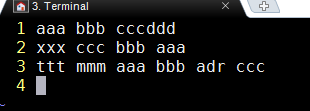

2017-11月
上月 下月
2017-11月上月 下月一、2017-11-01今日终于解决 cppcheck 屏蔽单个函数报错问题1、下载到 cppcheck 包，解压后，直接 make && make install2、对C代码进行检测在不使用 --inline-suppr关键字之前，检测效果：得到两个内存错误id="memleak" 和id="leakReturnValNotUsed"加上关键字 --inline-suppr 之后，代码中的 cppcheck-suppress立即生效：3、需要将安装目录的 cfg 目录 copy 到被检测目录。到少要将 cfg/std.cfg 复制过来。否则报错说找不到 std.cfg4、忽略某些目录，不检测的方法5、将 cppcheck 结果转化为 html 格式[22:09]终于找到一条临时策略，比之前方案略好FTP服务器`性能不错,PC端使用 filezilla，连接 android 服务器很流畅，不卡。[22:33]本想用 list.py 解决文件不连续问题，但是遇到了可怕的问题：三、vim 字符串替换替换之前的文本样子输入如下内容，回车后即执行替换操作替换之后的效果为四、Makefile 中创建临时的依赖目录五、sed首行插入1、进行 sed 插入实验之前的文本样子2、输入如下命令，文件每行行首插入内容3、只是将替换结果打印在屏幕，文件内容没有变化，这样保存 六、文件行尾追加内容七、同时在文本行首和行尾插入内容八、在第一行前面插入，即新插入第一行九、在文件最后追加一行十、curl 上传文件十一、curl 删除服务器文件十二、字符串加工十三、git 删除整个目录十四、cppcheck配合C代码的规则十五、svn删除整个目录十六、 gtest更加精减，makefile 更加精减2017-11-06一、elog gtest异步 test case，不能在 case 后面直接进行 destroy，因为不确定 buffer中的内容是否已经打印完毕二、vim 怎样跳到函数头/尾三、 grep 的玩法四、shell 得到精确的时间，纳秒级五、putty 小工具，连接 ssh 小巧方便，只是不够强大六、windows 上一个播放 wav 的小程序2017-11-17[4:39]一大早研究 docker，费了好大力气,终于开局[6:15]在网站https://hub.docker.com/上注册成功2017-11-19[22:06]shttpd确实是人家作者提供了现成的接口grep 查找的一个小技巧linux 安装 snmp原来很简单linux 下安装 net-snmp的方法[22:47]一个bitmap的实现，比特表数组23:02 得到人家一份加密算法共享代码[23:04]精心制作的字符操作脚本欲将搜索命令做成通用命令 replace.sh[23:12]人家写的 bootstrap css 实现表格可增删功能2017-11-20struct 中定义union 变量使用 vimdiff 查看到的结果：[21:15]讲述net-snmp agent 开发的例子,甚详2017-11-23[22:17] go语言安装[22:22] ngrok 自己用源码搭建2017-11-25[21:03]孙悟空网http://www.72swk.com/task_list-indus_pid-469-page-2.html2017-11-26[10:00]成功将家中电脑 web-server101.45.176.37部署到外网[10:52]搭建自己 ngrok 的文档，相对比较完整[20:20]13时许出门，然后直接去公司，将代码优化一下2017-11-29[20:46]今日学习内容， valgrind --tool=massif --stacks=yes ./ut上月 顶部 下月
六、文件行尾追加内容七、同时在文本行首和行尾插入内容八、在第一行前面插入，即新插入第一行九、在文件最后追加一行十、curl 上传文件十一、curl 删除服务器文件十二、字符串加工十三、git 删除整个目录十四、cppcheck配合C代码的规则十五、svn删除整个目录十六、 gtest更加精减，makefile 更加精减2017-11-06一、elog gtest异步 test case，不能在 case 后面直接进行 destroy，因为不确定 buffer中的内容是否已经打印完毕二、vim 怎样跳到函数头/尾三、 grep 的玩法四、shell 得到精确的时间，纳秒级五、putty 小工具，连接 ssh 小巧方便，只是不够强大六、windows 上一个播放 wav 的小程序2017-11-17[4:39]一大早研究 docker，费了好大力气,终于开局[6:15]在网站https://hub.docker.com/上注册成功2017-11-19[22:06]shttpd确实是人家作者提供了现成的接口grep 查找的一个小技巧linux 安装 snmp原来很简单linux 下安装 net-snmp的方法[22:47]一个bitmap的实现，比特表数组23:02 得到人家一份加密算法共享代码[23:04]精心制作的字符操作脚本欲将搜索命令做成通用命令 replace.sh[23:12]人家写的 bootstrap css 实现表格可增删功能2017-11-20struct 中定义union 变量使用 vimdiff 查看到的结果：[21:15]讲述net-snmp agent 开发的例子,甚详2017-11-23[22:17] go语言安装[22:22] ngrok 自己用源码搭建2017-11-25[21:03]孙悟空网http://www.72swk.com/task_list-indus_pid-469-page-2.html2017-11-26[10:00]成功将家中电脑 web-server101.45.176.37部署到外网[10:52]搭建自己 ngrok 的文档，相对比较完整[20:20]13时许出门，然后直接去公司，将代码优化一下2017-11-29[20:46]今日学习内容， valgrind --tool=massif --stacks=yes ./ut上月 顶部 下月
一、2017-11-01
今日终于解决 cppcheck 屏蔽单个函数报错问题
1、下载到 cppcheck 包，解压后，直接 make && make install
xdebian 安装 cppcheck# apt-get install cmake# cmake .# make && make install2、对C代码进行检测
xxxxxxxxxxint my_malloc(){ char *p = (char *)malloc(32); return p;}int test_leak(){ char *p2 = (char *)malloc(32); //cppcheck-suppress memleak}int main(){ //cppcheck-suppress leakReturnValNotUsed my_malloc(); test_leak(); return 0;}在不使用 --inline-suppr关键字之前，检测效果：
xxxxxxxxxx[wishcell@localhost test_cppcheck]$ /packages/cppcheck-master/cppcheck ./a.c --xml-version=2 <?xml version="1.0" encoding="UTF-8"?><results version="2"> <cppcheck version="1.79 dev"/> <errors>Checking a.c ... <error id="memleak" severity="error" msg="Memory leak: p2" verbose="Memory leak: p2" cwe="401"> <location file="a.c" line="13"/> </error> <error id="leakReturnValNotUsed" severity="error" msg="Return value of allocation function 'my_malloc' is not stored." verbose="Return value of allocation function 'my_malloc' is not stored." cwe="771"> <location file="a.c" line="18"/> </error> </errors></results>[wishcell@localhost test_cppcheck]$ 得到两个内存错误id="memleak" 和id="leakReturnValNotUsed"
加上关键字 --inline-supprcppcheck-suppress立即生效：
--inline-suppr xxxxxxxxxx[wishcell@localhost test_cppcheck]$ /packages/cppcheck-master/cppcheck --inline-suppr ./a.c --xml-version=2<?xml version="1.0" encoding="UTF-8"?><results version="2"> <cppcheck version="1.79 dev"/> <errors>Checking a.c ... </errors></results>[wishcell@localhost test_cppcheck]$ 3、需要将安装目录的 cfg 目录 copy 到被检测目录。到少要将 cfg/std.cfg 复制过来。否则报错说找不到 std.cfg
4、忽略某些目录，不检测的方法
xxxxxxxxxxcppcheck -i./dir1 -i./dir2 ../ --inline-suppr --xml-version=2.05、将 cppcheck 结果转化为 html 格式
xxxxxxxxxx# 改良输出cppcheck --template=vs pathcppcheck --template=gcc pathcppcheck --template={"{file},{line},{severity},{id},{message}"} # 这是自定义模式# 报告美化./cppcheck test.cpp --xml-version=2.0 > err.xmldebian@debian:~/study/c$ /packages/cppcheck-master/htmlreport/cppcheck-htmlreport --file=./err.xml --report-dir=./ReportDir --source-dir=./# 其中的 --report-dir=./ReportDir 这个目录，可以事先没有，此命令自己会创造。# 或者直接把结果输出到 web 服务器上，直接可以访问# cppcheck -j4 ./ --xml-version=2.0 > /nginx/html/prj_cppcheck/err.xml 2>&1# cppcheck-htmlreport --file=/nginx/html/prj_cppcheck/err.xml --report-dir=/nginx/html/prj_cppcheck --source-dir=./ --source-encoding="iso8859-1"debian@debian:~/study/c$ ls ReportDir/index.html stats.html style.css
[22:09]终于找到一条临时策略，比之前方案略好
FTP服务器`性能不错,PC端使用 filezilla，连接 android 服务器很流畅，不卡。

[22:33]本想用 list.py 解决文件不连续问题，但是遇到了可怕的问题：
好端端的代码，被 markdown 转化成 html之后，看似很漂亮。但是直接 copy过去保存为 list.py，却不能正常运行，中间出现了许多奇怪的字符。需要十分小心
xxxxxxxxxx#!C:\\Program Files\\Python27\\python.exe# -*- coding: utf-8 -*-import oshtml = ('<!DOCTYPE html>\n' '\n' '<html>\n' '{navigation}\n' '</html>\n')details_header = ('<details class="menu" close>\n' ' <summary>{content}</summary>\n' ' <ul>\n' '\n')details_footer = (' </ul>\n</details>\n')li = ' <li><a href = "{link}" target = "showframe"> {content} </a></li>\n'def file_scan(path): content = '' files = os.listdir(path) for file in files: file_path = os.path.join(path,file) if os.path.isdir(file_path): content += str(details_header).format(content=file) content += file_scan(file_path) content += str(details_footer) else: content += str(li).format(link=file_path, content=file) print '--------------------------------------------------' print path print content return content if __name__ == '__main__': content = str(details_header).format(content='root') content += file_scan('root') content += str(details_footer) text = str(html).format(navigation=content) with open('navigation.html', 'w') as f: f.writelines(text)
三、vim 字符串替换
替换之前的文本样子

输入如下内容，回车后即执行替换操作
替换之后的效果为
四、Makefile 中创建临时的依赖目录

五、sed首行插入
1、进行 sed 插入实验之前的文本样子
2、输入如下命令，文件每行行首插入内容
3、只是将替换结果打印在屏幕，文件内容没有变化，这样保存
sed 's/^/\<li\>/g' ./a.c | tee b.c
六、文件行尾追加内容
七、同时在文本行首和行尾插入内容
sed '/./{s/^/head_&/;s/$/$_end/}' ./a.c
但是换一种写法
sed '{s/^/head_&/;s/$/$_end/}' ./a.c，屁股后面却多出一行
八、在第一行前面插入，即新插入第一行
sed -i '1i\要插入的首行内容' a.c
九、在文件最后追加一行
sed -i '$a\要追加的文字' a.c
十、curl 上传文件
xxxxxxxxxxcurl -u eodn:111111 -T ./a.c ftp://10.63.180.93/

十一、curl 删除服务器文件
xxxxxxxxxxcurl -u user:pwd -X 'dele addx.c' ftp://10.63.180.93/十二、字符串加工
xxxxxxxxxx[user@ unittest]# echo `grep -rn Author ./cmt`2:Author family.name <family.name@xxx.xx.cn>[user@ unittest]# echo `grep -rn Author ./cmt` | cut -c3-Author family.name <family.name@xxx.xx.cn>十三、git 删除整个目录
[user @ src_prj]# git rm dir -r
十四、cppcheck配合C代码的规则
cppcheck --inline-suppr dir/a.c --xml-version=2.0
xxxxxxxxxxvoid func(){//cppcheck-suppress memleakreturn;}
十五、svn删除整个目录
xxxxxxxxxx[user@ unittest]svn del gtest-1.7.0/samples/D gtest-1.7.0/samplesD gtest-1.7.0/samples/.depsD gtest-1.7.0/samples/.deps/.dirstamp
十六、 gtest更加精减，makefile 更加精减
xxxxxxxxxxGTEST_DIR = ..CPPFLAGS += -isystem $(GTEST_DIR)/includeCXXFLAGS += -g -Wall -Wextra -pthreadTESTS = gtest.aGTEST_HEADERS = $(GTEST_DIR)/include/gtest/*.h \ $(GTEST_DIR)/include/gtest/internal/*.hall : $(TESTS)clean : rm -f $(TESTS) gtest.a gtest_main.a *.oGTEST_SRCS_ = $(GTEST_DIR)/src/*.cc $(GTEST_DIR)/src/*.h $(GTEST_HEADERS)gtest-all.o : $(GTEST_SRCS_) $(CXX) $(CPPFLAGS) -I$(GTEST_DIR) $(CXXFLAGS) -c \ $(GTEST_DIR)/src/gtest-all.ccgtest_main.o : $(GTEST_SRCS_) $(CXX) $(CPPFLAGS) -I$(GTEST_DIR) $(CXXFLAGS) -c \ $(GTEST_DIR)/src/gtest_main.ccgtest.a : gtest-all.o $(AR) $(ARFLAGS) $@ $^ rm ../include/gtest/internal/*.gch *.o -rfgtest不带 main函数的 makefile,更加精减
xxxxxxxxxxGTEST_DIR = ..CPPFLAGS += -isystem $(GTEST_DIR)/includeCXXFLAGS += -g -Wall -Wextra -pthreadTESTS = gtest.aGTEST_HEADERS = $(GTEST_DIR)/include/gtest/*.h \ $(GTEST_DIR)/include/gtest/internal/*.hall : $(TESTS)clean : rm -f $(TESTS) gtest.a gtest_main.a *.oGTEST_SRCS_ = $(GTEST_DIR)/src/*.cc $(GTEST_DIR)/src/*.h $(GTEST_HEADERS)gtest-all.o : $(GTEST_SRCS_) $(CXX) $(CPPFLAGS) -I$(GTEST_DIR) $(CXXFLAGS) -c \ $(GTEST_DIR)/src/gtest-all.ccgtest.a : gtest-all.o $(AR) $(ARFLAGS) $@ $^ rm ../include/gtest/internal/*.gch *.o -rf
2017-11-06
一、elog gtest异步 test case，不能在 case 后面直接进行 destroy，因为不确定 buffer中的内容是否已经打印完毕
xxxxxxxxxxTEST(logger, logger){ elog_init(); //这里申请了内存，执行了 malloc 操作 log_a("hello!"); log_e("hello!"); log_e("hello!"); log_d("hello!"); log_v("hello!"); log_raw("hello!"); //elog_destroy(); //这是一个桩函数，里面对前面的malloc 空间进行 free}正确的做法是把 elog_destroy() 在所有用例执行完毕后，再调用
二、vim 怎样跳到函数头/尾
[[ 跳到函数头，对大函数十分有用
]] 跳到函数尾
三、 grep 的玩法
1、最简单的 grep str ./file
xxxxxxxxxx[user@unittest]grep Author axxAuthor: user <family.name@xxx.com.cn>-// Author: axxb@google.com-// Author: axxb@google.com2、带上参数 -rn ,n 表示打印行数
xxxxxxxxxx[user@unittest]grep -rn Author axx2:Author: user <family.name@xxx.com.cn>24391: -// Author: axxb@google.com25231: -// Author: axxb@google.com
3、 grep -rn Author ./axx | less
4、grep 只取2行
xxxxxxxxxx[user@unittest]grep -m 2 -rn Author axx2:Author: user <family.name@xxx.com.cn>24391: -// Author: axxb@google.com或者[user@unittest]grep -m2 -rn Author axx2:Author: user <family.name@xxx.com.cn>24391: -// Author: axxb@google.com
四、shell 得到精确的时间，纳秒级
五、putty 小工具，连接 ssh 小巧方便，只是不够强大
六、windows 上一个播放 wav 的小程序
xxxxxxxxxx//#pragma comment(lib, "winmm.lib")int main(int argc, char **argc){ PlaySound("./data.wav", NULL, SND_FILENAME | SND_ASNYC); //system("pause"); return 0;}编译方法：
xxxxxxxxxx#gcc -g PlaySound.c -o PlaySound.exe -lwinmm
2017-11-17
[4:39]一大早研究 docker，费了好大力气,终于开局
1、以前从 github 下载源码自己编译的，应该也是好的，但是不会，把它删除了
2、从 CSDN 上下载了一下现成的二进制 rpm包 centos_docer_install.tar,然后正常安装,
rpm -ivh centos_docer_install.tar,但是安装后不会用，又删除了3、想再次重新安装，却因为刚刚的暴力删除，造成安装失败，一执行
rpm -ivh centos_docer_install.tar就提示 docker 已经安装。于是只得再暴力安装xxxxxxxxxx#rpm -i --force --nodeps docker-engine-1.7.1-1.el6.x86_64.rpm可以忽略所有依赖关系和文件问题，什么包都能安装上，但这种强制安装的软件包不能保证完全发挥功能4、安装提示成功后，再执行仍然失败
5、由于 cent-os是连网的，于是利用网络命令安装
xxxxxxxxxx[root@localhost gcc]# yum install y dockerLoaded plugins: fastestmirror, langpacksfile:///mnt/cdrom/repodata/repomd.xml: [Errno 14] curl#37 - "Couldn't open file /mnt/cdrom/repodata/repomd.xml"Trying other mirror.Loading mirror speeds from cached hostfile* epel: ae.mirror.rasanegar.comNo package y available.Resolving Dependencies--> Running transaction check---> Package docker.x86_64 2:1.12.6-61.git85d7426.el7.centos will be installed--> Processing Dependency: docker-common = 2:1.12.6-61.git85d7426.el7.centos for package: 2:docker-1.12.6-61.git85d7426.el7.centos.x86_64--> Processing Dependency: docker-client = 2:1.12.6-61.git85d7426.el7.centos for package: 2:docker-1.12.6-61.git85d7426.el7.centos.x86_64--> Running transaction check---> Package docker-client.x86_64 2:1.12.6-61.git85d7426.el7.centos will be installed---> Package docker-common.x86_64 2:1.12.6-61.git85d7426.el7.centos will be installed--> Processing Dependency: oci-umount >= 2:2.0.0-1 for package: 2:docker-common-1.12.6-61.git85d7426.el7.centos.x86_64--> Processing Dependency: oci-systemd-hook >= 1:0.1.4-9 for package: 2:docker-common-1.12.6-61.git85d7426.el7.centos.x86_64--> Processing Dependency: oci-register-machine >= 1:0-3.10 for package: 2:docker-common-1.12.6-61.git85d7426.el7.centos.x86_64--> Processing Dependency: container-storage-setup >= 0.7.0-1 for package: 2:docker-common-1.12.6-61.git85d7426.el7.centos.x86_64--> Processing Dependency: container-selinux >= 2:2.21-2 for package: 2:docker-common-1.12.6-61.git85d7426.el7.centos.x86_64--> Processing Dependency: skopeo-containers for package: 2:docker-common-1.12.6-61.git85d7426.el7.centos.x86_64--> Running transaction check---> Package container-selinux.noarch 2:2.28-1.git85ce147.el7 will be installed---> Package container-storage-setup.noarch 0:0.7.0-1.git4ca59c5.el7 will be installed---> Package oci-register-machine.x86_64 1:0-3.13.gitcd1e331.el7 will be installed---> Package oci-systemd-hook.x86_64 1:0.1.14-1.git1ba44c6.el7 will be installed---> Package oci-umount.x86_64 2:2.0.0-1.git299e781.el7 will be installed---> Package skopeo-containers.x86_64 1:0.1.24-1.dev.git28d4e08.el7 will be installed--> Processing Conflict: docker-engine-1.7.1-1.el6.x86_64 conflicts docker--> Processing Conflict: docker-engine-1.7.1-1.el6.x86_64 conflicts docker-io--> Finished Dependency ResolutionError: docker-engine conflicts with 2:docker-1.12.6-61.git85d7426.el7.centos.x86_64You could try using --skip-broken to work around the problem** Found 6 pre-existing rpmdb problem(s), 'yum check' output follows:ipa-admintools-4.4.0-14.el7.centos.7.noarch has installed conflicts freeipa-admintools: ipa-admintools-4.4.0-14.el7.centos.7.noarchipa-client-4.4.0-14.el7.centos.7.x86_64 has installed conflicts freeipa-client: ipa-client-4.4.0-14.el7.centos.7.x86_64ipa-client-common-4.4.0-14.el7.centos.7.noarch has installed conflicts freeipa-client-common: ipa-client-common-4.4.0-14.el7.centos.7.noarchipa-common-4.4.0-14.el7.centos.7.noarch has installed conflicts freeipa-common: ipa-common-4.4.0-14.el7.centos.7.noarchipa-server-4.4.0-14.el7.centos.7.x86_64 has installed conflicts freeipa-server: ipa-server-4.4.0-14.el7.centos.7.x86_64ipa-server-common-4.4.0-14.el7.centos.7.noarch has installed conflicts freeipa-server-common: ipa-server-common-4.4.0-14.el7.centos.7.noarch[root@localhost gcc]#6、再次运行仍然不行，但是得到重要提示
xxxxxxxxxx[root@localhost centos_docer_install]# docker run hello-worldCannot connect to the Docker daemon. Is 'docker -d' running on this host?人家提示，无法连接上 docker 后台，是否要在本机'docker -d'命令启动后台，于是尝试之
xxxxxxxxxx[root@localhost centos_docer_install]# docker -dINFO[0000] Listening for HTTP on unix (/var/run/docker.sock)INFO[0000] [graphdriver] using prior storage driver "devicemapper"INFO[0000] Loading containers: start.......INFO[0000] Loading containers: done.INFO[0000] Daemon has completed initializationINFO[0000] Docker daemon commit=786b29d execdriver=native-0.2 graphdriver=devicemapper version=1.7.17、然后再重新开启一个窗口
xxxxxxxxxx[root@localhost gcc]# docker run hello-worldHello from Docker!This message shows that your installation appears to be working correctly.To generate this message, Docker took the following steps:1. The Docker client contacted the Docker daemon.2. The Docker daemon pulled the "hello-world" image from the Docker Hub.3. The Docker daemon created a new container from that image which runs theexecutable that produces the output you are currently reading.4. The Docker daemon streamed that output to the Docker client, which sent itto your terminal.To try something more ambitious, you can run an Ubuntu container with:$ docker run -it ubuntu bashShare images, automate workflows, and more with a free Docker ID:https://cloud.docker.com/For more examples and ideas, visit:https://docs.docker.com/engine/userguide/[root@localhost gcc]# docker run -it ubuntu bashUnable to find image 'ubuntu:latest' locallylatest: Pulling from ubuntu8db0bf403a0c: Downloading [===============> ] 15.24 MB/47.62 MB124b875a5a49: Download complete67f5a73aac65: Download completed39138dcaf97: Download complete87a858601d1a: Download complete4c4d9bf9cff5: Download complete而在后台窗口，也在相应打印提示，先说没有找到 unbuntu 镜像，然后就开始从网上下载
xxxxxxxxxx..........................INFO[0000] Loading containers: done.INFO[0000] Daemon has completed initializationINFO[0000] Docker daemon commit=786b29d execdriver=native-0.2 graphdriver=devicemapper version=1.7.1INFO[0076] POST /v1.19/containers/createERRO[0076] Handler for POST /containers/create returned error: No such image: hello-world (tag: latest)ERRO[0076] HTTP Error err=No such image: hello-world (tag: latest) statusCode=404INFO[0076] POST /v1.19/images/create?fromImage=hello-world&tag=latestINFO[0077] Trust graph fetch failed: Get https://dvjy3tqbc323p.cloudfront.net/trust/official.json: dial tcp: lookup dvjy3tqbc323p.cloudfront.net: no such hostINFO[0085] POST /v1.19/containers/create...................INFO[0000] Loading containers: done.INFO[0000] Daemon has completed initializationINFO[0000] Docker daemon commit=786b29d execdriver=native-0.2 graphdriver=devicemapper version=1.7.1^[^[INFO[0044] POST /v1.19/containers/createINFO[0045] POST /v1.19/containers/828c6b64cb77b9e3a4a0e3ef5b2ad989649f724ea2456caea4ad7697bef74b11/attach?stderr=1&stdout=1&stream=1INFO[0045] POST /v1.19/containers/828c6b64cb77b9e3a4a0e3ef5b2ad989649f724ea2456caea4ad7697bef74b11/startINFO[0045] POST /v1.19/containers/828c6b64cb77b9e3a4a0e3ef5b2ad989649f724ea2456caea4ad7697bef74b11/wait^[[AINFO[0051] POST /v1.19/containers/createINFO[0051] POST /v1.19/containers/3c727a0fb1a27ecc44cafeb69b5a2463103f2c3197fc23158279f9e1317e0e9e/attach?stderr=1&stdout=1&stream=1INFO[0051] POST /v1.19/containers/3c727a0fb1a27ecc44cafeb69b5a2463103f2c3197fc23158279f9e1317e0e9e/startINFO[0051] POST /v1.19/containers/3c727a0fb1a27ecc44cafeb69b5a2463103f2c3197fc23158279f9e1317e0e9e/waitINFO[0081] POST /v1.19/containers/createERRO[0081] Handler for POST /containers/create returned error: No such image: ubuntu (tag: latest)ERRO[0081] HTTP Error err=No such image: ubuntu (tag: latest) statusCode=404INFO[0081] POST /v1.19/images/create?fromImage=ubuntu&tag=latestINFO[0083] Trust graph fetch failed: Get https://dvjy3tqbc323p.cloudfront.net/trust/official.json: dial tcp: lookup dvjy3tqbc323p.cloudfront.net: no such hostINFO[0194] POST /v1.19/containers/create.............然后，ubuntu下载完毕后， docker 自动运行了 ubuntu操作系统，并且登录了进去
xxxxxxxxxx[root@localhost gcc]# docker run -it ubuntu bashUnable to find image 'ubuntu:latest' locallylatest: Pulling from ubuntu8db0bf403a0c: Pull complete124b875a5a49: Pull complete67f5a73aac65: Pull completed39138dcaf97: Pull complete87a858601d1a: Pull complete4c4d9bf9cff5: Pull completeDigest: sha256:2018a8979db0980f75e0f24f0a03a6ccac0a556f213fa208df6a37c7eb7d4c04Status: Downloaded newer image for ubuntu:latestroot@cb424c616961:/# docker psbash: docker: command not foundroot@cb424c616961:/# dockerbash: docker: command not foundroot@cb424c616961:/# docker -vbash: docker: command not foundroot@cb424c616961:/# pwd/root@cb424c616961:/# whoamirootroot@cb424c616961:/# uname -aLinux cb424c616961 3.10.0-514.26.2.el7.x86_64 #1 SMP Tue Jul 4 15:04:05 UTC 2017 x86_64 x86_64 x86_64 GNU/Linuxroot@cb424c616961:/# pwd/root@cb424c616961:/# lsbin boot dev etc home lib lib64 media mnt opt proc root run sbin srv sys tmp usr varroot@cb424c616961:/# df -hFilesystem Size Used Avail Use% Mounted on/dev/mapper/docker-253:0-86680145-cb424c6169618b69dd00c6b0d2665b9663daca8348476e45ecc8ff58ba17ca82 9.8G 143M 9.1G 2% /tmpfs 2.1G 0 2.1G 0% /devshm 64M 0 64M 0% /dev/shm/dev/mapper/cl-root 50G 21G 30G 41% /etc/hostsroot@cb424c616961:/# unameLinuxroot@cb424c616961:/# cat /proc/syssys/ sysrq-trigger sysvipc/root@cb424c616961:/# cat /proc/syssys/ sysrq-trigger sysvipc/root@cb424c616961:/# cat /proc/versionLinux version 3.10.0-514.26.2.el7.x86_64 (builder@kbuilder.dev.centos.org) (gcc version 4.8.5 20150623 (Red Hat 4.8.5-11) (GCC) ) #1 SMP Tue Jul 4 15:04:05 UTC 2017root@cb424c616961:/# docker -vbash: docker: command not foundroot@cb424c616961:/#8、再次查看有哪些 docker 进程在运行
xxxxxxxxxx[root@localhost wishcell]# docker ps -aCONTAINER ID IMAGE COMMAND CREATED STATUS PORTS NAMEScb424c616961 ubuntu "bash" 12 minutes ago Up 12 minutes thirsty_turing3c727a0fb1a2 hello-world "/hello" 15 minutes ago Exited (0) 15 minutes ago agitated_fermi828c6b64cb77 hello-world "/hello" 15 minutes ago Exited (0) 15 minutes ago sharp_cray79d253eb9103 hello-world "/hello" 38 minutes ago Exited (0) 38 minutes ago jolly_carson2f242f5099d2 hello-world "/hello" 38 minutes ago Exited (0) 38 minutes ago stoic_tesla1859c5411177 hello-world "/hello" 38 minutes ago Exited (0) 38 minutes ago mad_fermat[root@localhost wishcell]#9、至此，docker 算是开局成功，中间一个步骤不知是否有影响，补充在此
docker error: /var/run/docker.sock: no such file or directory的问题
xxxxxxxxxx用boot2docker时，如果看到下面的问题，可以尝试用下面提供的解决方案：FATA[0000] Get http:///var/run/docker.sock/v1.18/version:dial unix /var/run/docker.sock: no such file or directory.Are you trying to connect to a TLS-enabled daemon without TLS?步骤1：boot2docker startboot2docker shellinit步骤2:export DOCKER_CERT_PATH=C:\Users\vonc\.boot2docker\certs\boot2docker-vmexport DOCKER_TLS_VERIFY=1export DOCKER_HOST=tcp://192.168.59.103:2376步骤3:boot2docker sshThen the docker works again
[6:15]在网站https://hub.docker.com/上注册成功
docker 常用命令
xxxxxxxxxx1、docker -h 帮助2、获取镜像sudo docker pull NAME[:TAG]sudo docker pull centos:latest3、启动Container盒子sudo docker run [OPTIONS] IMAGE [COMMAND] [ARG...]sudp docker run -t -i contos /bin/bash4、查看镜像列表，列出本地的所有imagessudo docker images [OPTIONS] [NAME]sudo docker images centos5、查看容器列表，可看到我们创建过的所有containersudo docker ps [OPTIONS]sudo docker ps -a6、删除镜像，从本地删除一个已经下载的镜像sudo docker rmi IMAGE [IMAGE...]sudo docker rmi centos:latest7、移除一个或多个容器实例sudo docker rm [OPTIONS] CONTAINER [CONTAINER...]移除所有微运行的容器sudo docker rm sudo docker ps -aq8、停止一个正在运行的容器sudo docker kill [OPTIONS] CONTAINER [CONTAINNER...]sudo docker kill 026e9、重启一个正在运行的容器sudo docker restart [OPTIONS] contains[CONTAINER]sudo docker restart 026e10、停止一个已经停止的容器sudo docker start [OPTIONS] CONTAINER [CONTAINER..]sudo docker start 026e
2017-11-19
[22:06]shttpd确实是人家作者提供了现成的接口
程序最初的注册功能， shttpd_register_url其实就是说，哪个 url 要交给哪个函数处理,这是自己写服务器无法解决的大问题
grep 查找的一个小技巧
[user@ dir# grep -rn SNMPADDR_T ./ | grep '\.h',必须将点转义，否则会被当作通配符
linux 安装 snmp原来很简单
安装成功后，验证之：
xxxxxxxxxx#snmpget -v2c -c public 10.63.180.115 .1.3.6.1.4.1.3902.1086.3.1.5.2.1.1.1.4.2snmp也可以获取设备全部信息,这是一个通用OID
xxxxxxxxxx#snmpwalk -v2c -c public 10.63.180.115 .1.3.6.1.2.1.1
linux 下安装 net-snmp的方法
官网下载 net-snmp5.7.3，下载到 centos7，然后 ./configure && make && make install,第一次编译报错，然后 make clean && make && make install,竟然成功了
==》》但是在自家电脑虚拟机上尝试失败。
==》》由于家中虚拟机可以连接外网，于是尝试,竟然成功
xxxxxxxxxx#yum install net-snmp成功之后，将 snmpd 服务开启，
xxxxxxxxxx[root@localhost net-snmp]# systemctl restart snmpd[root@localhost net-snmp]# service snmpd statusRedirecting to /bin/systemctl status snmpd.service● snmpd.service - Simple Network Management Protocol (SNMP) Daemon.Loaded: loaded (/usr/lib/systemd/system/snmpd.service; disabled; vendor preset: disabled)Active: active (running) since Mon 2017-11-20 11:11:37 EST; 17s agoMain PID: 22776 (snmpd)Memory: 4.3MCGroup: /system.slice/snmpd.service└─22776 /usr/sbin/snmpd -LS0-6d -fNov 20 11:11:37 localhost.localdomain systemd[1]: Starting Simple Network Management Protocol (SNMP) Daemon....Nov 20 11:11:37 localhost.localdomain snmpd[22776]: NET-SNMP version 5.7.2Nov 20 11:11:37 localhost.localdomain systemd[1]: Started Simple Network Management Protocol (SNMP) Daemon..[root@localhost net-snmp]#然后在其它机器上获取mib量
先在 centos开启服务
xxxxxxxxxxroot@localhost net-snmp]# /usr/sbin/snmpd[root@localhost net-snmp]# ps -ef | grep snmpdroot 29059 1 0 23:01 ? 00:00:00 /usr/sbin/snmpdroot 29070 19318 0 23:02 pts/2 00:00:00 grep --color=auto snmpd[root@localhost net-snmp]#然后在 cygwin 里面获取 centos 中的 mib 量
[22:47]一个bitmap的实现，比特表数组
xxxxxxxxxxint tmp_flag; 上图

23:02 得到人家一份加密算法共享代码
https://github.com/zhangdongyue/AES128cbc，能编译运行通过，但是未深入研读代码xxxxxxxxxxAdministrator@WINDOWS-EQN68ID /cygdrive/e/study/algorithm/AES128cbc$ make -j32cc -c -o main.o main.ccc -c -o aes128_com.o aes128_com.ccc -c -o aes128dec.o aes128dec.ccc -c -o aes128enc.o aes128enc.ccc -c -o common.o common.ccc -c -o euclid_gcb.o euclid_gcb.ccc -c -o GF_2sup8.o GF_2sup8.ccc -c -o s_box.o s_box.car rs libaes128.a aes128_com.o aes128dec.o aes128enc.o common.o euclid_gcb.o GF_2sup8 .o s_box.oar: 正在创建 libaes128.agcc -o test main.o libaes128.aAdministrator@WINDOWS-EQN68ID /cygdrive/e/study/algorithm/AES128cbc$ ./test.exee6fc19f8d269588524c00008fb1a572f3243f6a8885a308d313198a2e0370734ptlen=16Administrator@WINDOWS-EQN68ID /cygdrive/e/study/algorithm/AES128cbc$
[23:04]精心制作的字符操作脚本
欲将搜索命令
xxxxxxxxxxsed -i -e 's/orig_str/dest_str/g' `grep -rn orig_str ./ -rl`做成通用命令 replace.sh
xxxxxxxxxxif ["$#" -lt 2 ];then echo "error,please input src_str dest_str" exitfiecho $1echo $2echo `grep -rn $1 ./ -rl`sed -i -e 's/$1/$2/g' `grep -rn $1 ./ -rl` ##这里的单引号应改为双引号
[23:12]人家写的 bootstrap css 实现表格可增删功能
代码尚未研究http://blog.csdn.net/wangmei4968/aritcle/details/48437175
2017-11-20
struct 中定义union 变量
使用 vimdiff 查看到的结果：

[21:15]讲述net-snmp agent 开发的例子,甚详
2017-11-23
[22:17] go语言安装
安装包在这里go-pakage,具体的安装步骤：
http://blog.csdn.net/WuxCSDN/article/details/728725681、准备go安装包
[https://golang.org/doc/install?download=go1.8.3.linux-amd64.tar.gz](https://golang.org/doc/install?download=go1.8.3.linux-amd64.tar.gz)2、选择安装路径
由于默认的go路径，在/usr/local下， 所以用如下命令，解压创建/usr/local/go tar -C /usr/local -xzf go1.8.3.linux-amd64.tar.gz3、添加PATH环境变量
xxxxxxxxxxvi /etc/profile然后加入下面这行:export PATH=$PATH:/usr/local/go/bin4、建立Go的工作空间（workspace，也就是GOPATH环境变量指向的目录）
GO代码必须在工作空间内。工作空间是一个目录，其中包含三个子目录： src —- 里面每一个子目录，就是一个包。包内是Go的源码文件 pkg —- 编译后生成的，包的目标文件 bin —- 生成的可执行文件。 这里，我们在/home目录下, 建立一个名为gopath(可以不是gopath, 任意名字都可以)的文件夹， 然后再建立三个子文件夹(子文件夹名必须为src、pkg、bin)。如下图5、设置GOPATH环境变量
xxxxxxxxxxvi /etc/profile然后加入下面这行:export GOPATH=/home/gopath保存后，执行以下命令，使环境变量立即生效:source /etc/profile至此，Go语言的环境已经安装完毕。下面开始 HelloWorld喽~
[22:22] ngrok 自己用源码搭建
源码包在这里ngrok-package
然后很简单的，先按上述说明安装好 go 语言环境，直接 make 就可以了。在当前目录下 ./bin/ 下面会生成 ngrok 和 ngrokd
如何运行你自己的ngrokd服务器
http://blog.csdn.net/shikewei0103/article/details/41284815xxxxxxxxxx运行自己的ngrok的服务器是很容易！下面的说明将帮助你走好人生路！1.获取SSL证书ngrok通过TLS提供安全通道，所以你需要一个SSL证书。假设你要创建的*.example.com的隧道，买一个通配符SSL证书*.example.com的。请注意，如果你不需要运行HTTPS隧道，你并不需要一个通配符证书。（事实上，你可以使用自签名的证书，在这一点上，看到该文件在以后的章节）。2.修改你的DNS您需要使用提供给您的DNS管理工具，通过您的供应商来创建一个指向*.example.com的到服务器在那里你会运行ngrokd的IP地址的记录。3.编译你可以编译ngrokd服务器使用下面的命令：使发布服务器请确保你设置你的目标服务器的平台GOOS/ GOARCH环境变量编译。然后在复制二进制文件到您的服务器。4.运行服务器你会运行在服务器上使用下面的命令。./ngrokd -tlsKey="/path/to/tls.key" -tlsCrt="/path/to/tls.crt" -domain="example.com"指定您的TLS证书和密钥ngrok不仅使TLS加密连接。当您运行ngrokd，你需要指示它在哪里可以找到你的TLS证书和私钥。指定与以下开关路径：-tlsKey="/path/to/tls.key" -tlsCrt="/path/to/tls.crt"设置服务器的域当你运行你自己的ngrokd服务器，你需要告诉ngrokd它的运行，以便它知道什么网址发给客户的域。-domain=“example.com”5.配置客户端为了与客户端连接，你需要设置两个选项ngrok的配置文件。该ngrok配置文件是由〜/.ngrok读默认情况下，简单的YAML文件。您可以指定与-config开关自定义配置文件路径。你的配置文件必须包含以下两个选项。server_addr: example.com:4443trust_host_root_certs: true用您的ngrokd服务器的地址为“example.com:4443”。在“trust_host_root_certs”参数指示建立TLS连接到服务器时ngrok信任的根证书在计算机上。默认情况下，ngrok只信任的ngrok.com根证书。6.将与客户端然后，只需运行ngrok像往常一样安全地连接到你自己的ngrokd服务器！ngrok80ngrokd使用自签名的SSL证书它可能与AA自签名证书运行ngrokd，但你需要重新编译ngrok与您的签名CA.如果您选择使用自签名的证书，请注意，您必须删除配置价值trust_host_root_certs或将其设置为false：trust_host_root_certs：false尚未动手验证，时间过的太快，已经 22:27,但是收获是 ngrokd 在本地运行起来了，而且本地的 ngrok 可以成功连接上 ngrokd ，只是ngrokd 没有把数据派发给 ngrok.
2017-11-25
[21:03]孙悟空网http://www.72swk.com/task_list-indus_pid-469-page-2.html
使用 coding 账号
2017-11-26
[10:00]成功将家中电脑 web-server101.45.176.37部署到外网
1、将自己PC的 web-server端口设置为8080(如 shttpd)
2、配置路由器
3、想办法得到路由器在外网上的ip
A、利用外网获取
B、到自己的路由器上去查看
但是，路由器一旦重启，其外网IP就会发生变化，甚是烦人
4、在外网访问自己的web-server
5、问题
每次路由器重启之后， 路由器的 ip 会发生变化，PC 的 IP也会发生变化
6、解决方案
A、利用域名解析，已经在百度购买域名解析服务，但是使用不便
B、自己写一个程序，主动上报路由器IP。一旦路由器重启，IP发生变化，就 给自己的139邮箱发邮件，目前技术可行,随便一个脚本搞定
C、将WEB-SERVER部署在虚拟机上，免得坏人搞破坏
D、将PC设置成静态IP
7、怎样利用百度 域名解析功能
经与百度云客服沟通。明确在不备案的情况下，用自己主机，无法访问（尽管此时不用域名，也能成功访问，但是总是不便）
但是如果用境外主机，则无需备案，就可以正常访问，这是逼我选选择境外主机啊，不然域名就浪费了。如果国外网站可以访问家中电脑，而国内域名可以访问国外电脑。那就实现间接访问家中电脑
[10:52]搭建自己 ngrok 的文档，相对比较完整
原网址：http://blog.csdn.net/u013216667/article/details/50782084
下载到本地：搭建自己的ngrok服务
[20:20]13时许出门，然后直接去公司，将代码优化一下
2017-11-29
[20:46]今日学习内容， valgrind --tool=massif --stacks=yes ./ut
主要学习内容，来自 valgrind 官网的阅读,http://valgrind.org/docs/manual/ms-manual.html，重要部分翻译如下：
1、 valgrind --tool=massif --stacks=yes ./ut 记录 heap, 额外 heap（用于内存管理、字节对齐等），默认 stack 功能不开 2、 massif 能检测 memcheck 发现不了的问题 3、运行 valgrind --tool=massif --stacks=yes ./ut 得到输出文件 massif.out.12345 查看其内容的方法：ms_print massif.out.12345 或者直接使用 vi 命令查看 4、对图像解释 Number of snapshots: 25 ==>>共有三个详细快照 Detailed snapshots: [9, 14 (peak), 24] 它们分别是 9、14、24 每个竖线代表一次快照，横线表示到下次快照之前的状态 默认最多只有100条 snapshots,每次申请/释放内存，都会产生一个快照 随着程序运行时间越来越久，它采集 snapshots 的频率会越来越低。还会将原来已经采集到的 snapshots 丢弃。 当达到最大值时，将有一半的 snapshots 被丢掉。所以每次执行程序，都应当配置合理的 --max-snapshots 值。 snapshots 主要是普通快照，detailed 隔一段有一个， peak 只会有一个 5、massif 检测到的峰值可能不对，因为 A、峰值只有在释放的时候才采集。如果程序只有采集而无释放，所以如果代码里面只有 malloc 而无free。所以峰值就只能在最后才能发现，或者无法检测到 B、massif 检测到的峰值可能与实际值相差 1%，可以用命令行 --peak-inaccuracy 配置 6、图像下方的数字说明7、
--pages-as-heap=yes不能与 '--stacks=yes'同用
上月 顶部 下月